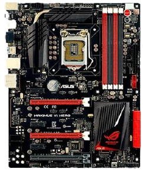
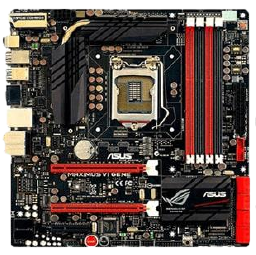
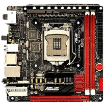
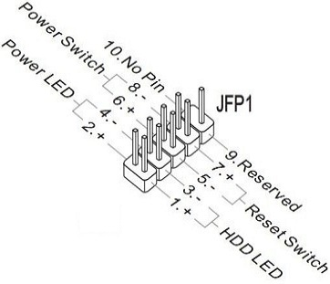

Installing the Motherboard
Although PC cases come in different shapes and sizes, regardless, installing the motherboard is generally the same process. First identify if you have a protective plate included with the motherboard the protects the USB and other AV connections on the motherboard. Some motherboards have these plates pre-installed and others have these plates seperate from the motherboard. If the plate is seperate then line up the protective plate with the corresponding hole on the PC Case. Push the plate from inside the PC case into the correct hole in order to secure it and then place the motherboard into the case, making sure the AV connections line up with the holes in the protective plate. If the protective plate is pre-installed on the motherboard, then simply line up the motherboard connections with the corresponding hole in the PC case. Once lined up, the motherboard should also be placed over manufactured screw holes in the case. Screw these in with the mounting screws included with your motherboard, making sure NOT to overscrew and crack the motherboard, and you have sucessfully mounted the motherboard.
Scroll over the three motherboard sizes below for a diagram of each size
ATX 
Micro ATX 
Mini ITX 
Once installed into the case, use this time while the motherboard does not have all of the components installed to locate the correct headers for the PC case's front control panel. The panel on a case will usually include at least a power button and USB slot which have to be plugged into the correct header on the motherboard. Cases usually come with pre-installed fans that also have to be plugged into the correct header on the motherboard. The manual for the case should indicate what each wire is and the motherboards manual will have a diagram for the "JFP1" header, that is where the cables on the PC's front panel will be plugged in. The headers for the case fans should be labled "SYS-FAN" or something similar to that.
Example of a JFP1 diagram
Click the next button to move on to the next step:Installing storage drives